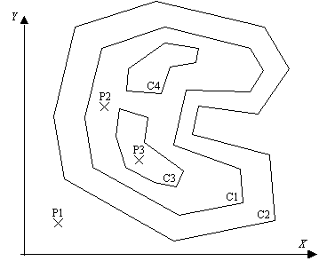
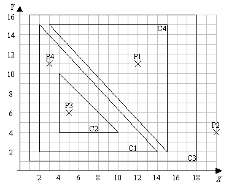

Points, Polygons and Containers
Consider a set of closed polygons such that one polygon completely surrounds, directly, 0, 1 or 2 polygons and each one of these may surround other 0, 1 or 2 polygons and so on. In the example given in the figure 1, polygon C2 surrounds polygon C1; C1 surrounds C3 and C4.
A container of a point (x,y) is the most interior polygon that still contains the point. In the example, the container of point P1 is "null", the container of point P2 is polygon C1 and the container of P3 is C3.

Figure 1 - Points and Polygons
Given a set of polygons in the form of a list of vertices (Vx,Vy), and a set of points (Px,Py), the problem proposed is to determine the container of each point.
It is assumed that no coincidences exist between points and lines segments and no pair of polygons are touching each other. The coordinates of points and vertices may be any real value, positive or negative.
The input begins with a single positive integer on a line by itself indicating the number of the cases following, each of them as described below. This line is followed by a blank line, and there is also a blank line between two consecutive inputs.
The input is a sequence of text lines, as follows.
The first line contains the number NC (integer format) of polygons.
It is followed by NC lines of text, each line defining a polygon (no order of polygons is asumed). A polygon is defined by its identifier (integer format) and a list of vertices. Each vertex is defined by its coordinates (Vx, Vy), in decimal format. The vertices are sorted accordingly to their sequence in the polygon.
The next line of text contains the number NP of points to be processed.
It is followed by NP lines of text, each line containing a point (no order of points is asumed). A point is defined by its identifier (integer format) and coordinates (Px, Py).
All identifiers are bigger than zero and all the values in a text line are separated by a space
For each test case, the output must follow the description below. The outputs of two consecutive cases will be separated by a blank line.
NP lines of text, each one containing a point identifier and the container found, separated by a space. A "null" container is identified with a zero.
The lines must be sorted by increasing order of the points identifiers.
Sample Input
1
4
3 18 16 1 16 1 1 18 1
1 2 15 2 2 14 2
4 15 2 15 15 3 15
2 10 4 4 10 4 4
4
2 20 4
4 3 11
3 5 6
1 12 11
Sample Output
1 4
2 0
3 2
4 1

Figure 2 - Example input